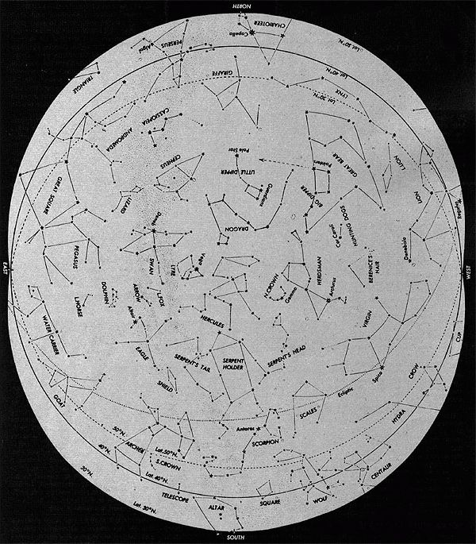

For "heaven's" sake, take advantage of clear spring nights to check out the . . .
Imagine that it's an invitingly crisp evening, with just a touch of warmth in the air to herald the arrival of spring . . . and - after the dinner dishes are done - you stroll outside to take in the fading glow of daylight. While dusk deepens, you watch the evening star growing brighter as it chases the sun westward. If it's a clear night, you might also pick out the still-dim shape of the Big Dipper before retreating inside.
But wait a minute! If you retire early, you'll miss the best part of the astral show. In fact, the opening act has only just begun when the first few stars pop into sight. Each night, season after season, dozens of characters (the constellations) fill the firmament with their outlines.
Most constellations really do look like the persons, creatures, or objects that they're named for . . . provided the stars that make up the pictures are connected properly. The problem is that most traditional astral charts connect the "dots" randomly, in a pattern that - more often than not - doesn't even resemble what it's supposed to be (according to its name).
There is, however, a happy exception to that rule: H.A. Rey's book The Stars: A New Way to See Them (Houghton Mifflin, 1976). Rey's "new" method actually helps the stargazer visualize the constellations as familiar figures or objects, much as the ancients must have seen them. The celestial charts in his book simply connect the stars in meaningful patterns, to produce recognizable shapes.
For instance, the constellation of Gemini, or the Twins, is outlined - on most star charts - by a confusing shape that's difficult to trace in the sky (and even harder to remember). But Rey's version of that star group is an appealing pair of handholding stick figures ... which, once you've picked them out the first time, will be hard to miss in the night sky.
In the same way that you can "meet" the Twins, you can learn to recognize lots of other constellations ... but don't expect to always make such acquaintances easily, since (like any good friends) they'll require some time and effort to get to know. The truth is that finding all the stars of a constellation is often difficult: Some are faint, some hide behind background haze, and others are deceptively far apart.
Nevertheless, finding every star in a certain sky picture carries its own rewards. You'll feel a real sense of accomplishment when you've located all the points of the Herdsman (a large figure sitting comfortably with his hands on his knees and his pipe in his mouth) or of the powerful Hunter, Orion . . . or when-on a hot summer night-you can see a giant Scorpion with a flashing tail low in the southern sky.
The number of heavenly pictures is not, in itself, overwhelming: There are only 88 constellations in the entire sky, and not all of those star groups are visible from everywhere. In the continental United States, which is located mostly between the latitudes of 25° and 50°, approximately 40 can be seen (in southern locations, perhaps a few more) . . . but not all of them can be observed at the same time. On a given evening, no more than two dozen constellations will be visible overhead, in any location.
One of the reasons for this "scarcity" is that most of the individual sky pictures are immense . . . much bigger, in fact, than you might expect before you actually begin stargazing. To get a feeling for the size of constellations, picture a full moon: That celestial body may appear large, but ten moons could fit between the Pointers - the two stars leading toward the North Star - of the Big Dipper.
Unlike the technical science of astronomy, amateur stargazing doesn't require a lot of expensive equipment. In fact, you'll need only a couple of items to enjoy the changing overhead show: the star chart that accompanies this article (or - better yet - a copy of Rey's manual, which contains dozens of charts for year-round use), and a flashlight. (The light is necessary because - if you're like most star observers - you will probably find yourself looking back and forth from chart to sky as you pick out the constellations.) Be sure to cover the end of the flashlight with a piece of red cellophane held in place by a rubber band, since the unfiltered beam would distort your night vision.
Although no other equipment is really necessary, I do recommend that you take some kind of folding patio lounge along on your nightly stargazing sessions. After all, why should you risk a stiff neck and aching legs if you can enjoy the show in comfort?
You might also want to take a pair of binoculars outdoors, in order to look closely at individual stars, planets, or the moon. Field glasses - with their limited scope of vision - provide no help in seeing enormous sky pictures . . . but some other celestial sights are so spectacular when observed through binoculars that you'll probably want to have a pair with you, just in case. Through magnified lenses the Milky Way, for example, becomes a breathtaking panorama of thousands of stars . . . and if the close-up sight of the Pleiades star cluster doesn't bring a smile to your face, there's no poetry in your soul!
Before you head outside, you'll need to do a little preparation. First, notice that the star chart printed here (like all celestial maps) seems to reverse east and west. This is because the diagram actually represents what's overhead - not underfoot - so all directions will be the opposite of the terrestrial ones we're familiar with. You can correct this difference by simply turning the chart so that the direction in which you're facing is at the bottom of the page, and then holding the map overhead. With practice, your confusion about celestial directions should disappear ... just keep reminding yourself that you're looking at a map of what's above you.
Once you have that common problem straightened out, choose a constellation you want to see and take a few minutes to study it on the chart. Try to form a mental picture of its stars, by observing how many there are and where they're located in relation to each other. (It's also a good idea to note the position of any nearby stars that might help you to pinpoint the sky picture you're after.)
Then - with the constellation's outline firmly in mind - you're ready to go outside and search for the real thing . . . but don't forget to take the star chart and flashlight with you. You'll need to find a dark location for your celestial viewing . . . the darker, the better. To do so, simply make the most of where you live: In a city, climb to the rooftop of your apartment building . . . in the suburbs, try stargazing in a vacant lot . . . and, on a homestead, you may find your back yard to be an ideal observatory! Clear, moonless nights are best, of course . . . but don't limit your constellation viewing to those rare occasions. (Actually, such "obstacles" as bright moonlight or wispy clouds often enhance the challenge of trying to find a complete constellation.)
As an example of the star-searching process, let's suppose you want to find the Herdsman. First, study the constellation on your star chart. You'll notice that it isn't far from the Big Dipper . . . a familiar formation which you'll probably be able to sight quite easily. Then follow the curved path of the Dipper's handle a short distance across the sky, and you'll come to Arcturus, a bright star that serves as the Herdsman's knee.
Now here's where the element of imagination comes in. There really is the outline of a seated shepherd in those stars, but you have to work to "see" him. Turn the chart so that it shows the Big Dipper in the same position as you are seeing it in the sky, then pretend that Arcturus is the center of a clock, and use your map to figure out the "hour" of each star's location. For example, suppose the Herdsman's "neck" star appears to be at two-o'clock: Let your eyes trace a similar line in the sky until you find that particular member star. After you've located the triangle that forms the Herdsman's lower body, you can use the neck star as the central point of another clock to help you locate his head and cap. Finally, look for the shepherd's pipe (near the handle of the Big Dipper) and the faint stars of his feet. Eureka! You've found one of the major constellations.
Using this method, you can likely become acquainted with several new star clusters per night! With each constellation you locate, you'll feel an exhilarating sense of accomplishment (odds are that it won't be long before you're hooked on this absorbing pastime)!
Along with personal and practical (such as direction-finding) benefits, stargazing also offers an appreciation of the greater environment surrounding our Earth. Studying the sky can give us a new perspective, an awareness of our own planet's relatively tiny size and isolated position in the vastness of space. As a result, those details of life that seem so important during the day somehow quietly fade into obscurity out under the stars.
So now it's up to you. You have the star chart for this season's constellation viewing, and the few simple instructions you need. Out there - waiting for you every night - is the rest of our corner of the universe!
EDITOR'S NOTE: H.A. Rey's book The Stars: A New Way to See Them is available - for $5.95 plus 95 cents shipping and handling - from Mother's Bookshelf, P.O. Box 70, Hendersonville, North Carolina 28791.
From the book THE STARS: A New Way To See Them by H.A. Rey, published by Houghton Mifflin Company, Boston. Copyright © 1952,1962, 1967, 1970,1975,1976 by H.A. Rey.
|
 |
|
|